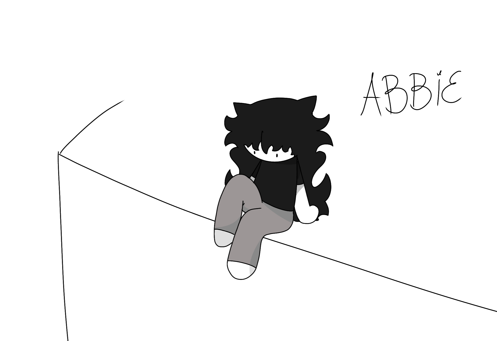

Name: Abbie Progódniya

Birth Date: december 6th, 2001
Gender: yes
Height: 1.50m/4'11"
Weight: 50kg/110lbs
Pronouns: they/them
Main Weapons: grappling hook, pistol
Abbie Progódniya is a character in the animated series "Crazy Combat". They are a traumatised person who can barely hold onto
themselves. Abbie is unpredictable n often acts from on their panic. They've been in war at the age of 5 n durring that
period they
were forced by their dad (Bojan Progódniya) to bury their mother whom he killed. Abbie is friends With Misha n Peter, has their own
demon buddy Boris who like to help them trough trauma.